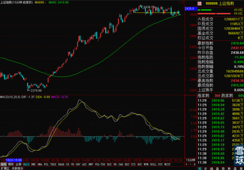
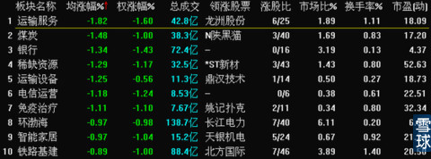
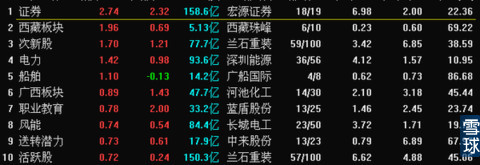
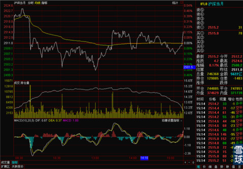
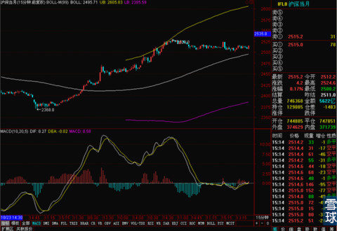
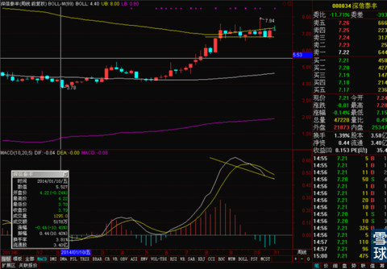

今天上午上证下跌了将近12个点，深证上涨了8.60。之前中国股市很多年都是深强沪弱，看指数就能看出来一点这么现象，虽然和沪市只有1000只左右股票，深市有1500只左右股票有关，但是指数相差这么多。还是多年来深市股票涨的好的原因。
现在为什么逆转过来了，为什么最近很长时间都是沪市强，深市弱。关键是深市多民营企业，沪市多国有和国有控股企业。从四万亿开始，政府刺激和国企改革之类的概念对沪市影响很大，更不用说沪港通的问题了。深市这边的民营企业多，这几年民营企业一直在艰难转型，收到的政策扶持也不像以前那么多了，所以整体复苏还是比较慢，导致深市最近很多时间弱于沪市。
但是沪港通之后，深交所一定会跟进，国企改革之后，一些民营资本有机会参与到国企的改制和经营中。这样的话，以现在深市的水平，很是有淘金的机会。所以大家没事可以多看看。
简单说说今天大盘，从周一在2424一线上高开以来，上证指数是一直围着2424这个价格中枢在运行，但是盘久了对最后两个交易日守住2424的压力就变大了。尤其是今天上午，2424这个位置的争夺看起来有点不给力。

但是好在目前15分钟线的MA60是有支撑的，而且MACD现在就在0轴附近。下午是本周最关键的时间窗口，现在指数是处于一个上下皆可，从技术分析看几率几乎55开的一个时间点。下午15分钟线MACD如果是金叉向上，MA60支撑不破。那么本周2424基本可以一战拿下。如果是继续横盘，甚至是下跌。本周后面两个交易日就很难说了。
板块上，今天的情况是前几天涨的最好的三大权重在回调。

而涨的好一些的券商是因为，申万并购宏源的消息刺激。

整个来看，市场暂时没有新的领军板块出现。下午我觉得如果走势比较按理出牌的话，银行应该能稍有起色，把大盘往上带一带。因为目前很多银行股的15分钟线多少有一点可能上涨的小迹象，虽然不是非常明显。
如果下午有某个板块在这个关键时间点突然发力，那么后市做短线的可以多关注。因为这个时间点发力的往往是下一轮上涨中的主力板块。
下午走势本来是稍微不利的，震荡幅度不大，但是收盘价低于关键价位2424，15分钟线也稍微有点走弱，看起来周四周五可能要有明显调整，本周站稳2424几率稍微降低。不过更神奇的是股指期货尾盘这个急拉。

估计出现这种情况，可能是晚上要有什么关键性利好出现。股指期货的15分钟线目前还算可以。这样明天的行情就变得极为难以判断，但是早盘有异动基本是定了的。

板块上看，下午证券是保持了上涨。银行和中午预测的差不多，下午有明显上涨，但是尾盘有掉下去了一部分。证券和银行这些金融股能不想保持上涨延续性不好说。不过土地流转概念下午的异动值得关注，还有马上就是11.11。电商类股票可以注意一下。还有APEC的开幕对东亚自贸区概念股票可能有支撑，这些都是近期关注重点。
鉴于大家关注银华锐进，我简单说一下。之处前几天0.528把小幅获利的银华锐进卖出之后一直再没有开仓买进。因为银华锐进跟踪的是深证100指数，这个指数最近走的有点纠结。所以即使冲高到了0.545，最近又跌回来了。已经买入的小伙伴不用慌，这个基金中长线一定是没有问题的，而且获利会很丰厚。但是现在还没有买的千万别着急，按我之前一直强调的，周线上看之前是0.529现在是0.531，这个价位站不稳短线不要着急进，什么时候稳稳站住了，就可以加仓买入了。
@李老问的这000034这类股票也是比较典型的，现在如果真是牛市初期，那么我们最该关注的不是日线，而应该是周线，必须找到长期趋势，在长期趋势确定的情况下再做中线或者是短线。

现在这只股票的关键是周线BOLL上轨，如果站上去，那么这个顶背离的趋势今后会在回踩周线上轨的时候得到支撑和化解。如果站不稳后市很难判断，暂时不要冒险介入。很多股票现在都有点这个意思，不是僵在BOLL上轨附近就是僵在BOLL中轨附近，操作思路现在都是应该多关注，看准站稳关键线再出手。
 |
今天上午上证下跌了将近12个点，SaiLv 2014-11-05 13:30:15 |
Copyright © 1996-2014 SINA Corporation All Rights Reserved.